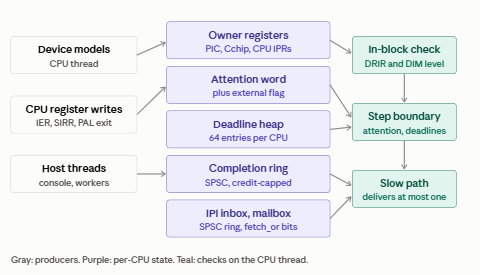

The interrupt harness is the part of EMulatR that decides when a CPU thread must stop running guest instructions and look at interrupts, timers and device completions. It replaces the per-boundary poll, which found real work 38 times in 4.95e9 checks per DS20 boot, with a single compare against a per-CPU attention word. Everything that can make an interrupt deliverable raises attention; the CPU checks attention with one relaxed load and one compare and takes the slow path only when something is due.
The harness is specified by SPEC-IFABRIC-001 Rev C (amendments AM-1 to AM-7) and its Appendix A (hot path). This topic describes the harness as built in Phase 1: its structures, who raises attention, where attention is checked, the memory-ordering rules, the controls, and how it is verified.
Design principle: interrupts are levels, not queue entries
An interrupt is never stored in a queue. It exists only as a level in the register that owns it: the 8259 PIC (IRR, ISR, IMR), the Tsunami/Typhoon Cchip (DRIR, DIM), or the CPU's own processor registers (IER, SIRR, ASTRR). The harness queues carry only causes: "something changed, re-evaluate". Three consequences follow:
•Nothing is lost if a cause is coalesced. Repeated edges before service collapse into one request, exactly as the 8259 IRR behaves.
•Nothing is delivered that is no longer true. The slow path reads the current level from the owner, so a level withdrawn before IACK takes the owner's spurious path (spurious IRQ7 or IRQ15), never a phantom device vector.
•Masks have one copy. Delivery evaluates against the owner's register, read synchronously on the CPU thread; no CPU-local mask shadow is kept (DEC-11, HP-R1).

Register owners
Register |
Owner |
Kind |
Inline on CPU thread |
|---|---|---|---|
IMR 0x21 / 0xA1 |
Pic8259Pair -> notifyMask |
gate |
yes |
DIM0..DIM3 |
TsunamiCchip -> notifyDim |
gate |
yes |
ELCR 0x4D0 / 0x4D1 |
Pic8259Pair |
trigger mode |
level source on ALi only |
Cypress 03H / 04H |
CY82C693 bridge config |
trigger mode |
level source on Cypress |
IER_CM |
CPU IPR (PALcode HW_MTPR) |
gate (IPL) |
yes; raises no attention today (SP-7 / SU-3 gap) |
Trigger-mode registers are not masks: a change re-derives the line's pending state from the current wire level.
Per-CPU structure

Each CPU owns one set of the structures below. Only the attention word is read on the hot path; everything else is read in the slow path.
Structure |
Written by |
Read by |
Purpose |
|---|---|---|---|
nextAttention (attention word) |
any producer, lowered only (CAS); CPU thread re-arms in slow path |
CPU thread, every check (relaxed load) |
The guest cycle at or after which the CPU must enter the slow path. One compare per check (I-1). |
External flag |
cross-thread producers (release store) |
CPU thread, SP-1 (exchange(0, acquire)) |
Says that some other thread has published work. Closes the lost wake-up window (5.5, A-1..A-5). |
Boundary raise flag |
CPU-thread boundary raises |
CPU thread at the Machine::step boundary |
Carries raises that are checked at the next instruction boundary rather than inside the block. |
Deadline heap (64 entries) |
CPU thread (arm, cancel) |
CPU thread, slow path |
Timer and device deadlines in guest cycles. Ties fire in arm order. Overflow is fatal and names capacity and count; the peak is reported at shutdown. |
Completion ring (SPSC) with credits |
one host producer thread |
CPU thread, slow path |
Carries device completions from a host thread. Ring plus staging never exceeds ring capacity; entries are never dropped. |
IPI inbox (per ordered CPU pair) |
sending CPU |
target CPU, slow path |
Inter-processor interrupt causes. |
IRQ mailbox (IrqMailbox) |
producers, fetch_or of one bit per line |
CPU thread, slow path |
A bit means "re-evaluate this line", never "this line is asserted" (DEC-14, HP-R4). |
Raising attention
Raise classes (H-4)
Every raise belongs to one of two classes, which decides where it is checked:
•Break raises: changes to the DRIR and DIM level word. They are checked inside the translated block (F-2), so an asserted PCI or Cchip interrupt breaks out of a long block without waiting for its end.
•Boundary raises: everything else, including all deadlines. They are checked at the Machine::step boundary.
Closing writes
A closing write is a register write that can make a pending request deliverable, for example an EOI, an unmask or a trigger-mode change. The rule: every closing write raises attention in the same operation. The PIC, the ELCR, the floppy controller and the 8042 raise on every write rather than trying to decide which writes close; this is cheap and cannot miss a case. AM-2 reports any closing change that was not raised as closeUnraised.
Any write that clears an ISR bit, or changes what ISR bits block, is a closing write (HP-R3, DEC-13). It releases a level-triggered line still held at EOI and every lower-priority request that was pending behind the in-service bit. The 8259 owner already re-sets IRR at acknowledgment for a level still held; the harness adds the attention raise at the release point.
Raise sites
Source |
Raise site |
Class |
|---|---|---|
COM1 / COM2 UART |
COM interrupt sink |
Break |
IDE channels |
IDE interrupt sink |
Break |
PCI INTx |
DRIR device bits |
Break |
Pchip error line, DIM writes |
Cchip DRIR / DIM level word |
Break |
Interval timer |
deadline heap |
Boundary (deadline) |
8259 PIC (ICW, OCW1, OCW2 all EOI forms, on master and slave) |
every write (DEC-13) |
Boundary |
8259 poll read |
#1b; optional, not required by AM-2 |
Boundary |
ELCR |
every write |
Boundary |
Cypress level-sense steer (DS20) |
every write |
Boundary |
Floppy controller (IRQ6) |
every write |
Boundary |
8042 keyboard controller (IRQ1) |
every write |
Boundary |
SRM console RX and carrier (PR-1) |
console thread, cross-thread sequence |
Boundary |
CPU IER, SIRR, ASTRR, mode |
IPR writes; IER_CM raise still missing |
Boundary |
Leaving PALmode |
palModeLeave (PalShadow.h:115), HW_REI (PipelineDriver.h:1763) |
Boundary |
Chipset reset |
reset path |
Boundary |
Raise sites are written as IFABRIC_RAISE(source). When the harness is compiled out the macro expands to nothing, so the old poll path runs with no added cost.
Cross-thread producers
Phase 1 is single-threaded for the guest (DEC-6), but host threads exist. Only one of them is a producer: the SRM console thread (PR-1). Console RX used to reach the CPU only because evalDeviceIrqs polled the m_rxReady hint each boundary; with the poll gone, the console thread raises attention itself. The poll removal and the console-side raise land in the same change. The console carrier (MSR.DCD) is latched through a CPU-thread point, TsunamiChipset::latchConsoleCarrier() (PC-4), and needs no raise today because modem-status interrupts are not implemented (PR-2). The storage pool threads are not producers (PR-3), and there is no network thread yet (PR-4).
A cross-thread producer publishes in this order (A-1..A-5):
record the cause // mailbox bit, ring entry, ...
externalFlag.store(1, std::memory_order_release)
lowerAttention(now) // CAS loop; only ever lowers nextAttention
The CPU consumes with externalFlag.exchange(0, std::memory_order_acquire) in SP-1, then drains. When it re-arms the attention word in SP-6 it publishes with compare_exchange and loops if the external flag was set in between, so a raise that lands during the slow path is never lost.
Checking attention
Check points
•Inside a translated block: break raises only (DRIR and DIM level word), F-2.
•At the Machine::step boundary: one relaxed load of nextAttention, one compare against the current guest cycle, and a test of the boundary raise flag. This is the whole hot path.
•Delivery is at block boundaries only (H-3; O-5 / P-7 re-certified).
Per-step duties
Some work the old poll did on every step is not interrupt work and must keep running every step until P-2 moves it to deadlines: the stop poll, spin-skip and warp, the console rxPaceInterval pacing, and diagnostics. The harness must not remove these along with the interrupt poll.
Slow path
Step |
Action |
|---|---|
SP-1 |
Consume the external flag: exchange(0, acquire). |
SP-2 |
Drain the completion ring and return credits. |
SP-3 |
Drain the IRQ mailbox and IPI inbox; for each bit, read the line's current level from its owner. |
SP-4 |
Fire due deadlines from the heap, in arm order. |
SP-5 |
Arbitrate: pending levels against masks, IPL and priority; IACK, 8259 cascade and vector generation run synchronously on the owner (DEC-12). |
SP-6 |
Re-arm nextAttention to the earliest deadline with compare_exchange; loop to SP-1 if the external flag is set. |
SP-7 |
Lists the attention sources (IPL, masks, MMIO) that must raise. EOI was the fifth poll-only path found by the code check and is now an SP-7 source (DEC-13). |
Memory ordering
Operation |
Order |
x86-64 |
ARM64 |
|---|---|---|---|
Hot-path load of nextAttention |
relaxed |
MOV |
LDR |
Producer sets external flag |
release |
MOV |
STLR |
SP-1 consumes external flag |
acquire (exchange) |
XCHG |
LDAXR / STLXR |
Lower / re-arm nextAttention |
CAS |
LOCK CMPXCHG |
LDAXR / STLXR loop |
Mailbox bit |
fetch_or |
LOCK OR |
LDSET or LL/SC loop |
No seq_cst operation appears on the hot path. Every atomic type used carries a static_assert(std::atomic<T>::is_always_lock_free). The cross-thread paths are checked under ThreadSanitizer (K-8).
Build and runtime controls
Control |
Kind |
Default |
Effect |
|---|---|---|---|
EMulatR_IRQ_HARNESS |
build option |
off |
Compiles the harness in. When off, IFABRIC_RAISE expands to nothing and the per-boundary poll runs. Also carried as a launcher registry entry. |
EMulatR_DIAG_KNOBS |
build option |
diagnostic builds only |
Compiles the AM-2 shadow checker. Release builds contain no AM-2 strings. |
EMulatR_DIAG_AM2 |
environment variable |
unset |
Turns the AM-2 checker on at run time. Forces the JIT off for that run. |
Verification
AM-2 shadow checker
AM-2 runs the harness and the old poll side by side. Before each device sweep it records the inputs to the interrupt decision (ISA levels, PIC output, DRIR, DIM, the timer latch, IER, SIRR, ASTRR, mode, and the console and network hints). After the sweep, any input that changed with no raise for its source since the last sweep counts as a disagreement against that source. A second counter, unattributed, counts interrupts that became deliverable with nothing raised. The report is one AM2: line after PROFILE: at exit, with the first disagreement's cycle and PC per source.
Counts from the baselines taken before the step-3 raises were complete (knob on):
Source |
DS20 (full startup) |
ES40 |
Meaning |
|---|---|---|---|
unattributed |
0 |
0 |
every newly deliverable interrupt was explained |
isa6 (floppy) |
18 rises / 18 falls |
1 |
raise on every write (#6) |
drir |
4 (bit 62) |
0 |
Pchip error line (#15), DS20 only |
consoleRx / carrier |
-- / -- |
9 / 1 |
only where there is console input; pacing needs its own deadline |
cpuSirr / cpuAstrr |
30,945 / 19,187 |
37,335 / 21,524 |
SIRR and PCTX / HWPCB sites (#11, #12) |
palExitPending |
81,677 (residue 7 after step 3) |
196,422 (residue 12 after step 3) |
leaving PALmode (#14) |
closeUnraised |
none |
isa6 = 1 |
covered by raising on every floppy write |
An earlier closeUnattributed count equal to the IACK count on each machine (1,716 and 806) was a detector artifact: the IACK read calls the device sweep itself. The detector now counts only per-step sweeps, and #1b stays optional.
Proof of concept
•12 random scripts of 20,000 steps each delivered every interrupt at the same step with the harness and with the poll.
•A two-thread stress of 200,000 completions through the ring lost none.
•Nine kinds of deliberately removed raise were each caught by AM-2.
V-1 gates
V-1 is the no-input DS20 workload: ds20pa, RelWithDebInfo, JIT off, auto_action boot, milestone "job terminated at", fixed TOY (EMulatR_TOY_MODE=fixed, epoch 2027-01-01), disks restored from v2.1-ab-golden before every run. A gate passes only on an exact match.
Gate |
Retired instructions |
Cycles |
|---|---|---|
G1 |
7,434,183,226 |
9,968,538,995 |
G2 |
7,434,183,226 |
9,968,538,995 |
G3 |
7,434,183,226 |
9,968,538,995 |
Performance
Run |
Harness off (s) |
Harness on (s) |
|---|---|---|
1 |
502.6 |
370.2 |
2 |
502.3 |
370.2 |
3 |
502.9 |
370.3 |
The harness cuts V-1 wall time by 26.3% (1.36x), with a run-to-run spread of 0.1%. An ES40 boot with the harness on reached "SYSTEM job terminated at" in 985 s with no bugcheck.
Status and remaining work
Residue confirmation (2026-09-28)
Both AM-2 residues were checker or raise-coverage gaps, not missed deliveries. The PAL-exit residue came from a rule that charged a gate even when a raised source covered the same step; the console residue came from the console receive feed and the COM1 carrier latch changing interrupt-visible state without raising attention.
The fix is committed as 98c8612. The confirmation runs:
Run |
Model |
Configuration |
Result |
AM-2 residues |
|---|---|---|---|---|
R2b |
DS20 |
AM-2 checker on (JIT forced off) |
V-1 exact: 7,434,183,226 retires / 9,968,538,995 cycles |
unattributed 0, palExitPending 0, no disagreements |
R3b |
DS20 |
Harness on, JIT on |
V-1 exact: 7,434,183,226 retires / 9,968,538,995 cycles |
(checker not armed) |
residue3 |
ES40 |
AM-2 checker on |
Reached "SYSTEM job terminated at" |
unattributed 0, palExitPending 0, no disagreements; consoleRx 12 and carrier 2 now raised |
As of 2026-09-28, AM-2 is committed (65faa3a) and steps 3 and 4 are committed (b70a4a2); the overnight record is v2.1/journals/20260927_OVERNIGHT_ifabric_step3_step4.md. The residues are cleared (98c8612) and the IER_CM raise is in b70a4a2.
The harness is still off by default. Remaining before it is turned on:
•Tests that the per-step duties still run every step with the harness on.
•A DS10 boot with the harness on. ES45 and DS25 follow when those platforms are ready.
•Turn the harness on by default in its own commit, gated by V-1.
After that: P-2 (device ticking and per-step duties move to deadlines), AM-7 (interrupt records), and the JIT-off and JIT-on timing owed to SPEC-JITHOST-001. The summary tear guard (HP-R5) must exist before any cross-thread publish in P-5, and cross-CPU DIM writes (HP-R6) wait on U-7.
See Also.